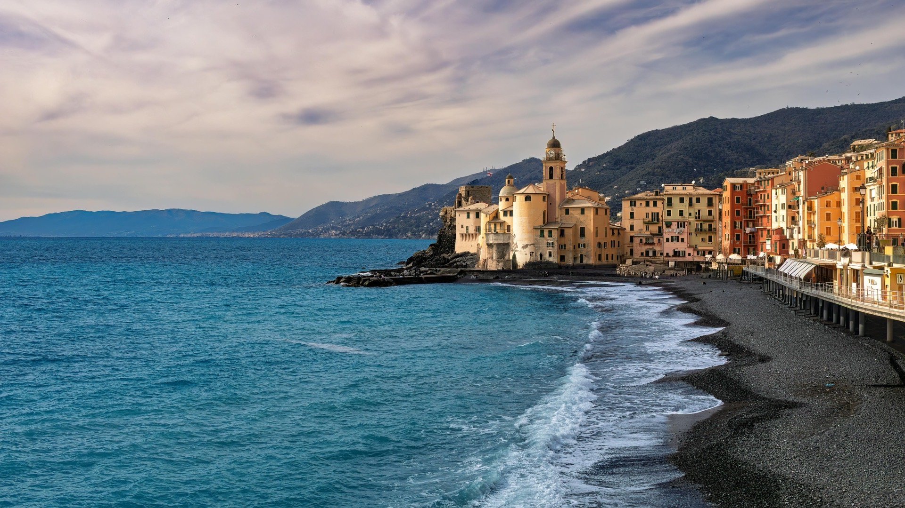

If you're planning a day trip from Genoa to Portofino, you're choosing one of the most beautiful experiences in Liguria. Getting from Genoa to Portofino is surprisingly easy and can comfortably be done in one day by train and bus, or by seasonal boat along the Ligurian coast. In this guide, I'll explain the easiest route, how the train from Genoa to Portofino works in practice, where to swim and eat, and how to enjoy the day at a more relaxed local pace.
Compare Your Options: Price & Time
| Option | Price (round-trip) | Time (one way) | Best for |
|---|---|---|---|
| Train + Bus (AMT Daily) | €20-30 | 1.5 hours | Budget travelers, independence |
| Golfo Paradiso Ferry | €26-29 | ~1.5 hours | Scenic journey, photos |
| Taxi | €100-150 (one way) | 1 hour* | Speed, families (*slower in peak season traffic) |
| Private Guided Tour | €500-700 (full day) | Full day | Stress-free, local secrets, no tourist traps |
| Private Yacht/Boat | €1200+ | Flexible | Luxury, VIP groups |
Is Portofino Worth Visiting?
Absolutely. Portofino is one of the most iconic destinations in Italy, famous for its colorful harbor, luxury yachts, crystal-clear water, and dramatic coastal scenery. But in my opinion, the real beauty of this day trip is not just Portofino itself — it's the entire coastline around it. The combination of Portofino, Paraggi, Santa Margherita Ligure, San Fruttuoso, and Camogli creates one of the most memorable day trips you can take from Genoa.

How to Get from Genoa to Portofino by Train and Bus
The easiest route from Genoa to Portofino is to take the train from Genova Brignole to Santa Margherita Ligure-Portofino, then continue by bus 782 to Portofino. The total journey usually takes 1–1.5 hours depending on connections, and it is the best option if you are visiting without a car.
There is no direct train station in Portofino itself. When people search for a train from Genoa to Portofino, the practical route is really: Genoa to Santa Margherita Ligure by train, then Santa Margherita to Portofino by bus, taxi, walk, or seasonal boat.
Best Apps for Visiting Portofino from Genoa
- Trenitalia — buy and store train tickets digitally.
- Trenit! — live train positions, delays, platforms, schedule changes.
- AMT Genova — local bus tickets including bus 782 to Portofino.
Best Budget Tip for Visiting Portofino
A daily AMT ticket (usually around €10, subject to change) includes unlimited local bus travel including bus 782. Lets you stop in Paraggi, continue to Portofino, return to Santa Margherita, and explore freely without buying new tickets each time.
Santa Margherita Ligure or Portofino?
- Portofino — more iconic, visually spectacular, better panoramic walks, luxury atmosphere.
- Santa Margherita Ligure — more relaxed, less crowded, better value restaurants, easier seaside walks.
Ideally visit both — they are very close to each other.
Perfect Portofino Day Trip Itinerary from Genoa
1. Start Early in Portofino
Visit Portofino first — the village falls into shade earlier than expected due to surrounding hills, so mornings and early afternoons are the most beautiful time.
2. Visit Chiesa di San Giorgio
Short uphill walk to Chiesa di San Giorgio — best panoramic views over Portofino harbor, one of the most photogenic viewpoints in the area.
3. Continue to Castello Brown
Continue uphill to Castello Brown for one of the most spectacular panoramic views on the Ligurian coast. Worth the climb.
4. Walk to Faro di Portofino
One of the most scenic coastal walks in Liguria. Local tip: beautiful bar near the lighthouse — perfect for an aperitivo with incredible sea views.
5. Swim in Paraggi
Stop in Paraggi for crystal-clear turquoise water. One of the most beautiful swimming spots near Portofino. Water shoes can be useful.

6. Visit San Fruttuoso (Optional)
Take a boat to San Fruttuoso — a hidden abbey accessible only by boat or hiking trail. Feels completely different from busy Portofino.
7. Finish Your Day in Camogli
Camogli is more authentic, less touristy, and more relaxed than Portofino. Best place nearby for fresh seafood and sunset dinners.

More Relaxed & Scenic Option: Boat from Genoa
Consider a tourist boat from Porto Antico in Genoa. Seasonal routes connect Genoa, Portofino, San Fruttuoso, and Camogli. Sometimes the boat journey itself becomes a highlight. Best during warmer months with good sea conditions. Check the current timetable and tickets on the official Golfo Paradiso Tour dei Due Golfi page.
Common Tourist Mistakes in Portofino
- Arriving too late — gets very crowded at midday especially in summer.
- Spending the entire day only in Portofino — the surrounding coastline is often more beautiful.
- Eating on the harbor without checking prices — always check Google reviews first.
- Forgetting to check ferry schedules — they change with weather and season.
- Wearing uncomfortable shoes — best viewpoints require uphill walking.
Best Places to Eat Near Portofino
Many harbor restaurants are overpriced. I recommend Santa Margherita Ligure or Camogli. Camogli in particular offers excellent seafood, better prices, and a more authentic atmosphere.
Returning to Genoa
Return trains run from Santa Margherita Ligure or Camogli. Check schedules in advance and avoid the last departure — stations get crowded in summer evenings.
Want a Stress-Free Portofino Day?
I can shape a private day around ferries, viewpoints, lunch, timing and your pace — with honest local recommendations and no tourist traps.
See the Portofino experienceFAQ
Can you visit Portofino as a day trip from Genoa?
Yes. Portofino is one of the easiest and most rewarding day trips from Genoa, especially if you combine it with Santa Margherita Ligure, Paraggi, San Fruttuoso or Camogli.
What is the easiest way to get from Genoa to Portofino?
The easiest way is train from Genova Brignole to Santa Margherita Ligure-Portofino, then bus 782 to Portofino. There is no train station directly in Portofino.
Is one day enough for Portofino?
Yes. One day is enough for Portofino from Genoa, especially if you start early and focus on Portofino, Paraggi, Santa Margherita Ligure or Camogli instead of trying to rush too many stops.
Is Portofino expensive?
Can be around the harbor — nearby towns offer much better value.
Can cruise passengers visit Portofino from Genoa?
Absolutely. See also our Genoa Cruise Itinerary guide.